Kaiki
Πώς φτιάχνετε καινούργια εκδρομή, καρτέλα προς καρτέλα, και πώς αλλάζετε με ασφάλεια μία που ήδη πουλάει.
Σεπτέμβριος 2026 · ενημερωμένο στις 25 Σεπτεμβρίου
Οι εικόνες είναι πραγματικές οθόνες, τραβηγμένες αυτόματα από το ίδιο το πρόγραμμα.
Τα ονόματα και οι τιμές σε αυτές είναι δοκιμαστικά.
Τα πρώτα δύο κεφάλαια είναι για να ξέρετε τι χρειάζεστε πριν ανοίξετε τη φόρμα. Μετά ακολουθούν τα επτά βήματα με τη σειρά που τα κάνετε. Τα τελευταία τρία κεφάλαια είναι για μια εκδρομή που υπάρχει ήδη — τι αλλάζει με ασφάλεια, τι όχι, και πώς τη βγάζετε από την πώληση.
Μια εκδρομή δεν στέκεται μόνη της. Χρειάζεται ένα σκάφος για να εκτελεστεί, ένα λιμάνι για να φύγει, τιμές για να κοστολογηθεί και μια πολιτική ακύρωσης για να πουληθεί. Αν λείπει κάτι από αυτά, η φόρμα σάς αφήνει να γράψετε, αλλά η εκδρομή δεν δημοσιεύεται.
| Τι | Πού φτιάχνεται | Χρειάζεται; |
|---|---|---|
| Λιμάνι / σημείο συνάντησης | Στόλος → Λιμάνια | Ναι, για να ξέρει ο επισκέπτης πού θα βρεθείτε. Φτιάξτε το πρώτο: και το σκάφος το χρειάζεται. |
| Σκάφος | Στόλος → Σκάφη | Ναι. Ο αριθμός επιβατών του είναι νόμιμο όριο για την εκδρομή. |
| Πολιτική ακύρωσης | Κατάλογος → Πολιτικές ακύρωσης | Ναι — είτε δική της, είτε η προεπιλεγμένη σας. |
| Περίοδος (σεζόν) | Κατάλογος → Περίοδοι, ή «Νέα περίοδος» μέσα στην καρτέλα «Τιμές» | Όχι. Μόνο αν η τιμή αλλάζει μέσα στη χρονιά. |
| Τιμές | Μέσα στην ίδια την εκδρομή, καρτέλα «Τιμές» | Ναι, αλλά όχι από πριν: μπαίνουν εκεί, στο βήμα 4. |
Μπορείτε να ξεκινήσετε την εκδρομή και να γυρίσετε. Η εκδρομή αποθηκεύεται ως πρόχειρη και η κάρτα «Πριν τη δημοσίευση» στα δεξιά σάς λέει κάθε στιγμή τι λείπει ακόμη.
Όλη η εκδρομή είναι μία σελίδα με πέντε καρτέλες. Δεν υπάρχουν κρυφές οθόνες: τα δρομολόγια, οι τιμές και τα πρόσθετα είναι μέσα στην καρτέλα όπου ανήκουν. Η καινούργια εκδρομή ανοίγει την ίδια σελίδα με την επεξεργασία — δεν υπάρχει ξεχωριστός οδηγός με δικά του πεδία.
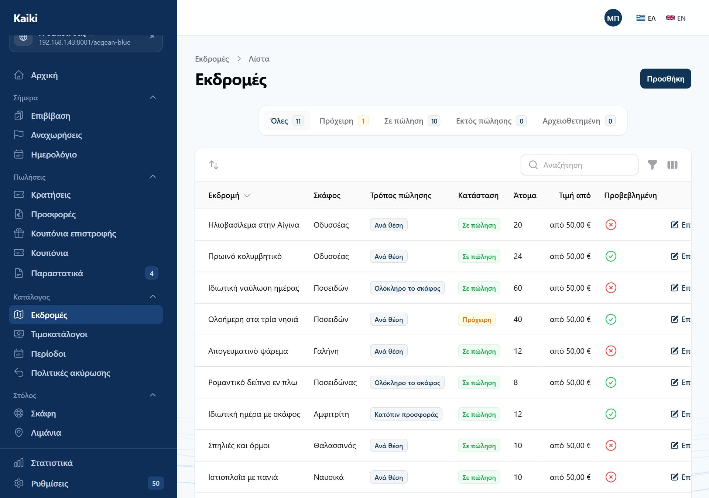
| Καρτέλα | Τι κρατάει |
|---|---|
| Βασικά | Τίτλος, slug, είδος, τρόπος πώλησης, Featured. |
| Πότε φεύγει | Διάρκεια, προσέλευση, σημείο συνάντησης, συνήθες σκάφος, πόσα άτομα, δρομολόγια. |
| Τιμές | Ομάδες επιβατών, περίοδοι, ο πίνακας των τιμών σε ευρώ, προκαταβολή και προθεσμίες, πρόσθετα. |
| Όροι | Πολιτική ακύρωσης, ΦΠΑ, στοιχεία επιβατών, ερωτήσεις στην κράτηση. |
| Σελίδα | Ό,τι διαβάζει ο επισκέπτης: κείμενα, φωτογραφίες, πρόγραμμα, Google, συχνές ερωτήσεις. |
Δίπλα στο όνομα κάθε καρτέλας εμφανίζεται μια μικρή ένδειξη. Αν λείπει κάτι για τη δημοσίευση, γράφει «λείπει 1» ή «λείπουν 2» στην καρτέλα όπου διορθώνεται: ένα σκάφος που λείπει μετράει στο «Πότε φεύγει», μια τιμή που λείπει στις «Τιμές». Αλλιώς, το «Πότε φεύγει» γράφει «1 ενεργό» ή «κανένα» για τα δρομολόγια, και η «Σελίδα» «7 από 8».
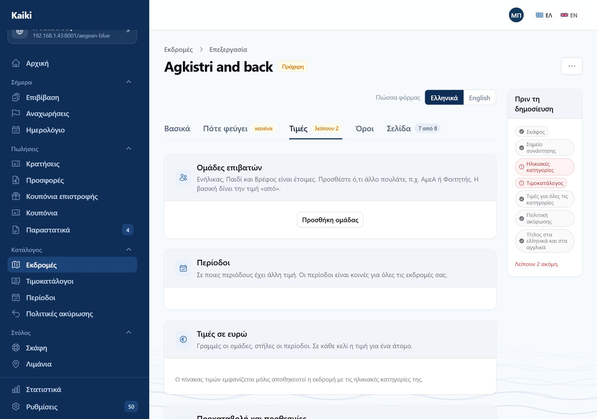
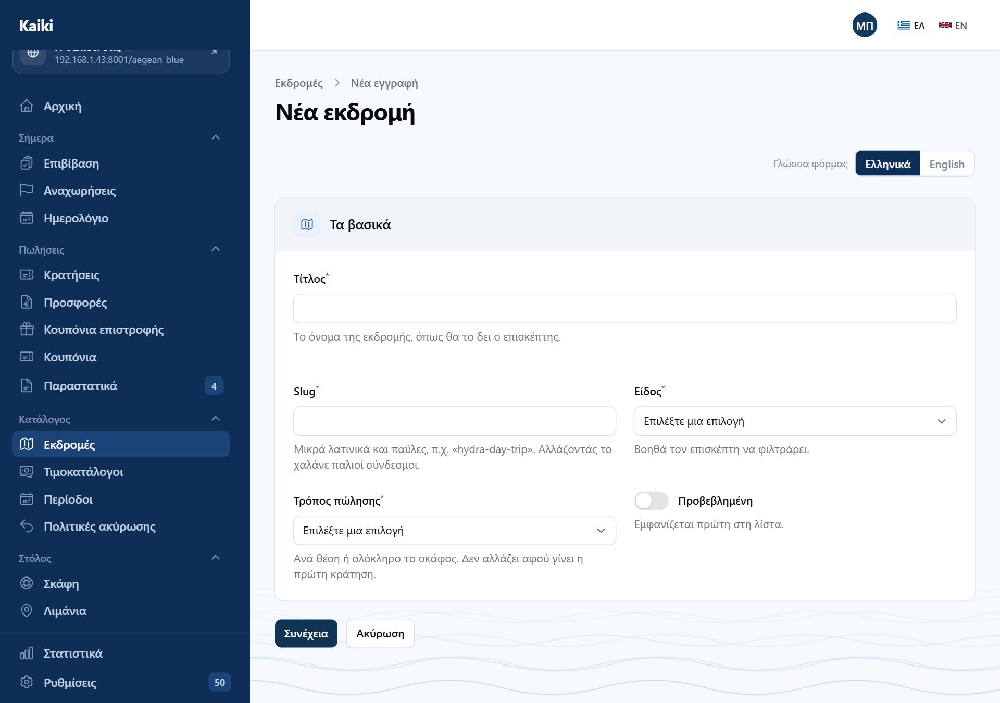
Το σκάφος δεν ζητείται εδώ. Είναι στην καρτέλα «Πότε φεύγει», δίπλα στα δρομολόγια και στα άτομα (βήμα 3).
| Τρόπος | Τι σημαίνει | Τι αλλάζει στη φόρμα |
|---|---|---|
| Ανά θέση | Κοινή εκδρομή, ο καθένας κλείνει θέσεις. | Έχει ομάδες επιβατών, πίνακα τιμών και δρομολόγια. |
| Ολόκληρο το σκάφος | Ιδιωτική ναύλωση: ένας πελάτης παίρνει το σκάφος. | Χωρίς ομάδες και δρομολόγια· έχει ώρα και, προαιρετικά, ελεύθερη ώρα. |
| Κατόπιν προσφοράς | Ο επισκέπτης ρωτάει, εσείς στέλνετε προσφορά. | Δεν πουλάει μόνη της· η κράτηση γίνεται από τις «Προσφορές». |
Μια εκδρομή που πουλήθηκε ανά θέση και γίνεται ναύλωση αφήνει πίσω της αναχωρήσεις που μετρούν θέσεις οι οποίες δεν υπάρχουν πια, και κρατήσεις των οποίων η τιμή υπολογίστηκε με άλλους κανόνες. Αν χρειαστεί να αλλάξει ο τρόπος πώλησης, φτιάξτε καινούργια εκδρομή και βγάλτε την παλιά εκτός πώλησης.
Το «Συνέχεια» αποθηκεύει την εκδρομή ως πρόχειρη και ανοίγει τη δική της σελίδα, στην καρτέλα «Πότε φεύγει». Μέχρι να δημοσιευτεί, δεν τη βλέπει κανείς και δεν πουλάει.
Η πρόχειρη ξεκινά με τα συνηθισμένα ήδη μέσα, για να μη γράφετε τα αυτονόητα:
Όσο η εκδρομή είναι πρόχειρη, κάθε καρτέλα τελειώνει με δύο κουμπιά: αριστερά «← Βασικά» (η προηγούμενη καρτέλα) και δεξιά «Επόμενο: Τιμές →» (η επόμενη). Έτσι περνάτε τις καρτέλες με τη σειρά, σαν βήματα.
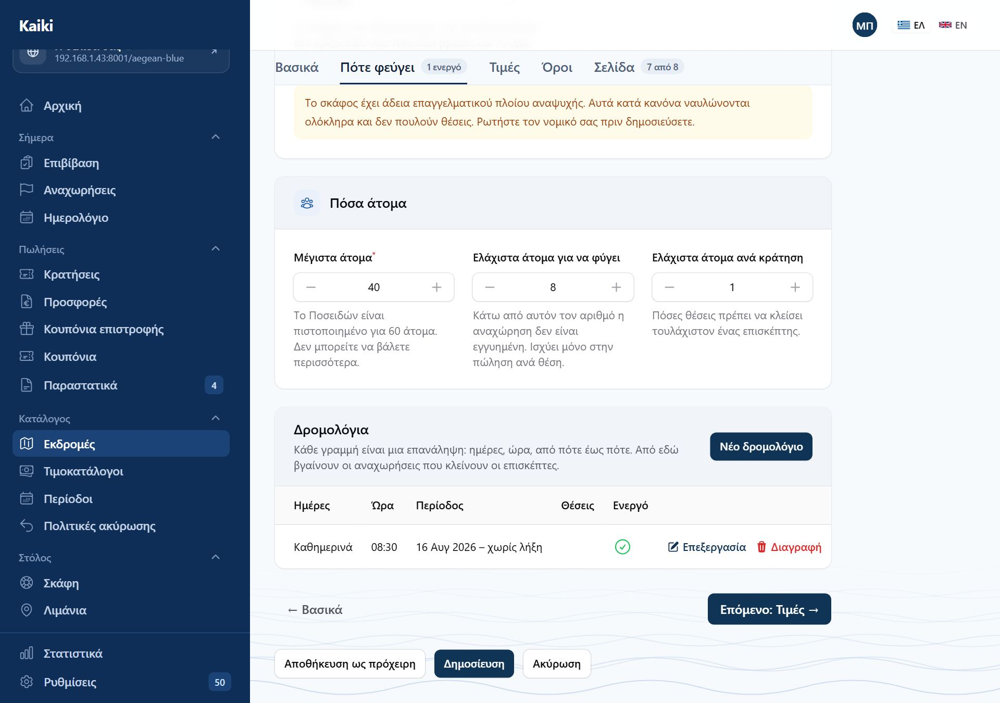
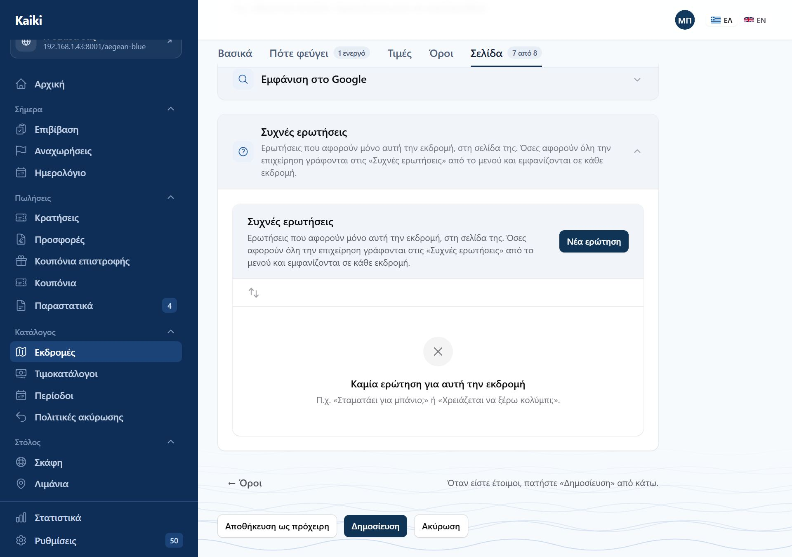
Αλλάζουν μόνο καρτέλα, και δεν χάνεται τίποτα: οι καρτέλες είναι μία φόρμα. Τα πεδία σώζονται με «Αποθήκευση ως πρόχειρη» ή «Δημοσίευση» στο κάτω μέρος. Οι λίστες μέσα στις καρτέλες — δρομολόγια, πρόσθετα, ερωτήσεις — σώζονται μόλις τις αλλάξετε, και ο πίνακας των τιμών με το δικό του κουμπί. Σε δημοσιευμένη εκδρομή τα κουμπιά των βημάτων δεν εμφανίζονται.
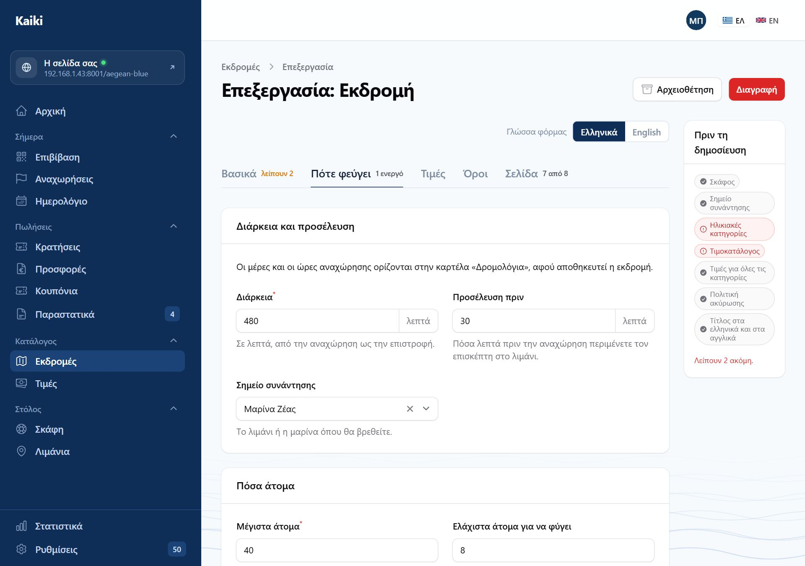
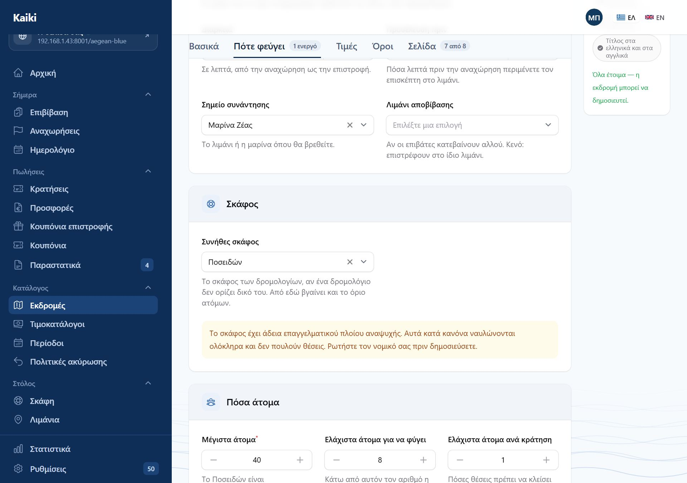
Το «Συνήθες σκάφος» είναι αυτό που εκτελεί τα δρομολόγια, εκτός αν ένα δρομολόγιο ορίσει δικό του. Από αυτό βγαίνει και το όριο ατόμων. Αν έχετε ένα μόνο σκάφος, είναι ήδη διαλεγμένο. Αν έχετε πολλά, διαλέγετε εδώ — μέχρι τότε η καρτέλα γράφει «λείπει 1».
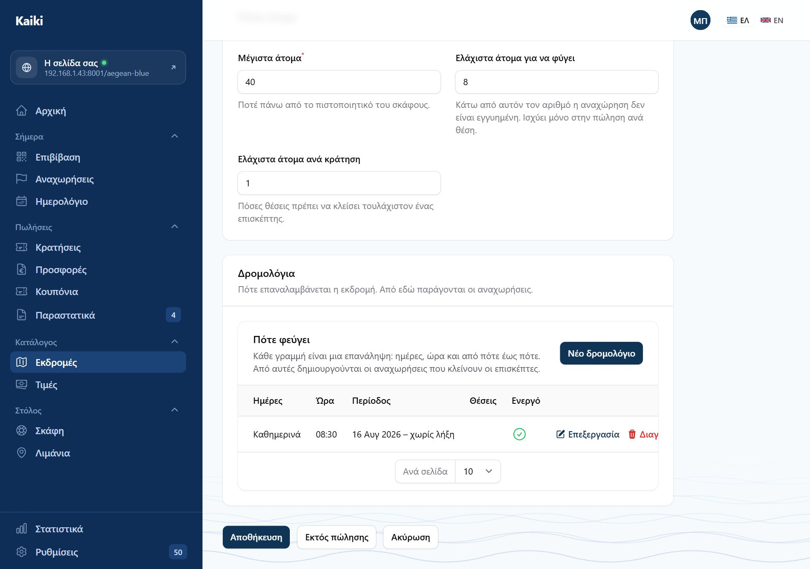
Χωρίς ενεργό δρομολόγιο η εκδρομή δεν έχει καμία μέρα να πουλήσει, και η ένδειξη δίπλα στην καρτέλα το λέει με πορτοκαλί: «κανένα». Ένα δρομολόγιο «Καθημερινά, 08:30, από 16 Αυγ 2026, χωρίς λήξη» είναι ό,τι χρειάζεται μια εκδρομή που τρέχει όλη τη σεζόν.
Στο «Νέο δρομολόγιο» διαλέγετε ημέρες, και τις ώρες με το «+ Ώρα»: ανοίγει ένας πίνακας με τις 24 ώρες, πατάτε την ώρα και μετά τα λεπτά, ανά πέντε. Δύο πατήματα, χωρίς πληκτρολόγιο. Οι ώρες που έχετε ήδη βάλει είναι χρωματισμένες, και την ίδια ώρα δεύτερη φορά δεν τη δέχεται.
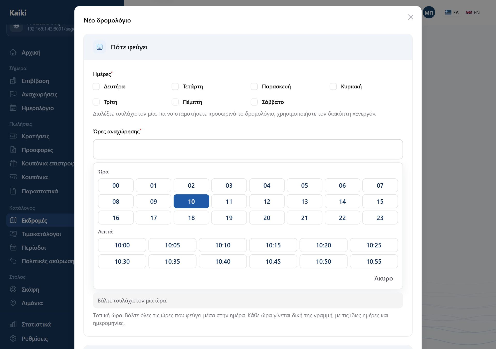
Στο ίδιο παράθυρο ορίζετε και ποιοι ταξιδεύουν: τον κυβερνήτη και το πλήρωμα από την ομάδα σας, ή — για όσους δεν έχουν λογαριασμό στο Kaiki — «Ή όνομα κυβερνήτη» και «Ή ονόματα πληρώματος», όπου γράφετε ονοματεπώνυμα και πατάτε Enter μετά από το καθένα. Τα ονόματα τυπώνονται στη λίστα επιβατών και στην κατάσταση πληρώματος και επιβατών· email δεν παίρνουν, αφού δεν έχουν λογαριασμό.
Δεν υπάρχουν δρομολόγια: ο πελάτης διαλέγει μέρα. Αν θέλετε να διαλέγει και ώρα, ανάψτε το «Ελεύθερη ώρα αναχώρησης» και ορίστε το παράθυρο «νωρίτερα από» / «αργότερα από».
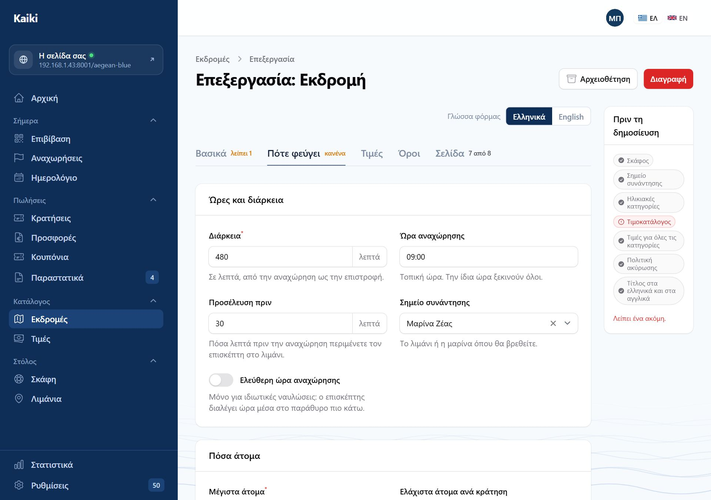
Σε εκδρομή ανά θέση η καρτέλα έχει πέντε πράγματα, με αυτή τη σειρά: ποιοι ταξιδεύουν (ομάδες επιβατών), σε ποιες περιόδους αλλάζει η τιμή, πόσο πληρώνει ο καθένας (ο πίνακας σε ευρώ), προκαταβολή και προθεσμίες, και τι πουλάτε δίπλα στη θέση (πρόσθετα).
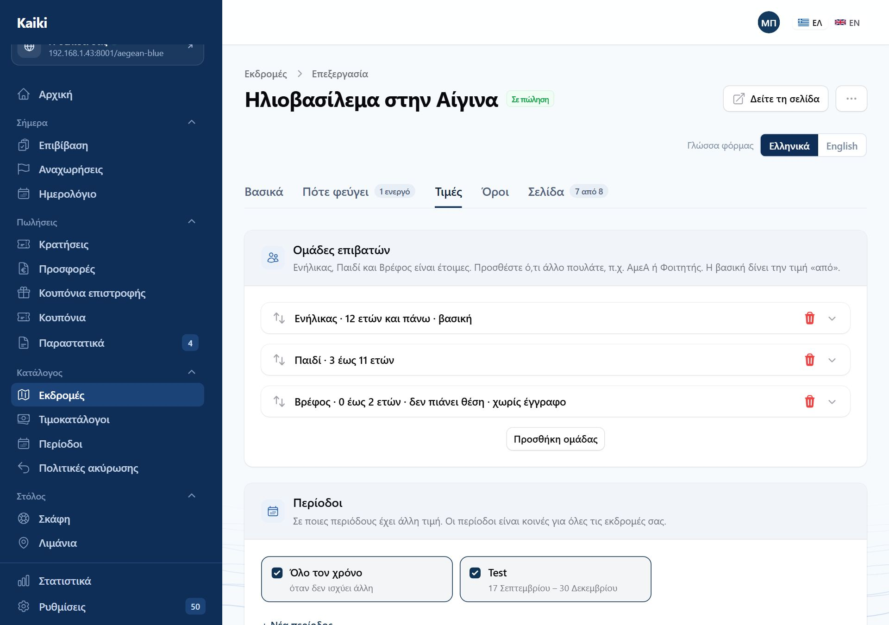
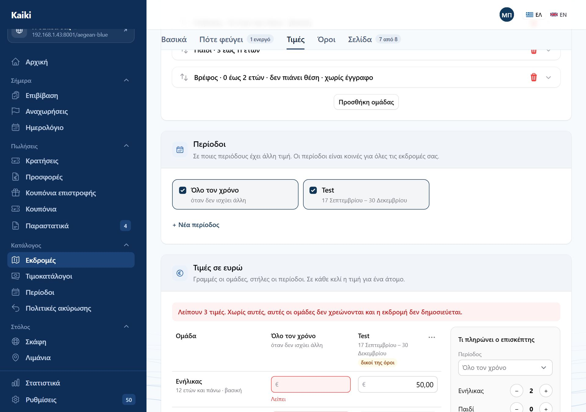
Η στήλη «Όλο τον χρόνο» είναι η τιμή που ισχύει όταν δεν ισχύει καμία άλλη περίοδος, και είναι η μόνη που χρειάζεται μια εκδρομή με μία τιμή όλο τον χρόνο. Προσθέτετε περίοδο μόνο όταν η τιμή αλλάζει: μια θερινή, ένα τριήμερο.
Οι περίοδοι είναι κοινές για όλες τις εκδρομές σας: φτιάχνονται μία φορά, στο Κατάλογος → Περίοδοι, ή εδώ με το «+ Νέα περίοδος» χωρίς να φύγετε από την εκδρομή — η καινούργια μπαίνει ήδη τσεκαρισμένη. Το τσεκάρισμα σώζεται μαζί με τις τιμές, με το «Αποθήκευση τιμών».
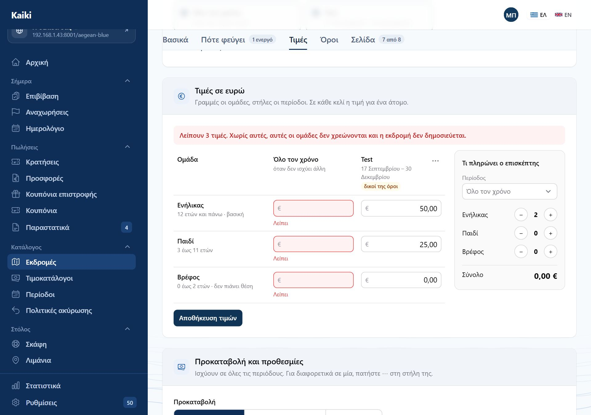
Γράφετε ποσό σε ευρώ, με ΦΠΑ μέσα — π.χ. 22,50. Αν λείπει έστω μία τιμή, η ομάδα δεν χρεώνεται σε εκείνη την περίοδο και η εκδρομή δεν δημοσιεύεται· το κόκκινο πλαίσιο πάνω από τον πίνακα λέει πόσες λείπουν.
Το «Αποθήκευση τιμών» σώζει τις τιμές, τις περιόδους που τσεκάρατε και την προκαταβολή· η «Αποθήκευση» στο τέλος της σελίδας σώζει την εκδρομή. Δουλεύουν χωριστά, οπότε μπορείτε να διορθώσετε μια τιμή χωρίς να ξανασώσετε όλη τη φόρμα. Όσο έχετε αλλαγές που δεν σώθηκαν, το γράφει δίπλα στο κουμπί.
Κάτω από τον πίνακα, μία φορά για όλη την εκδρομή: αν ζητάτε προκαταβολή (ολόκληρο το ποσό, ποσοστό του συνόλου ή σταθερό ποσό), πόσες ώρες πριν την αναχώρηση κλείνουν οι κρατήσεις, και πόσες μέρες νωρίτερα ανοίγουν. Αν μία περίοδος θέλει διαφορετικά, πατάτε ⋯ στη στήλη της· τότε γράφει «δικοί της όροι».
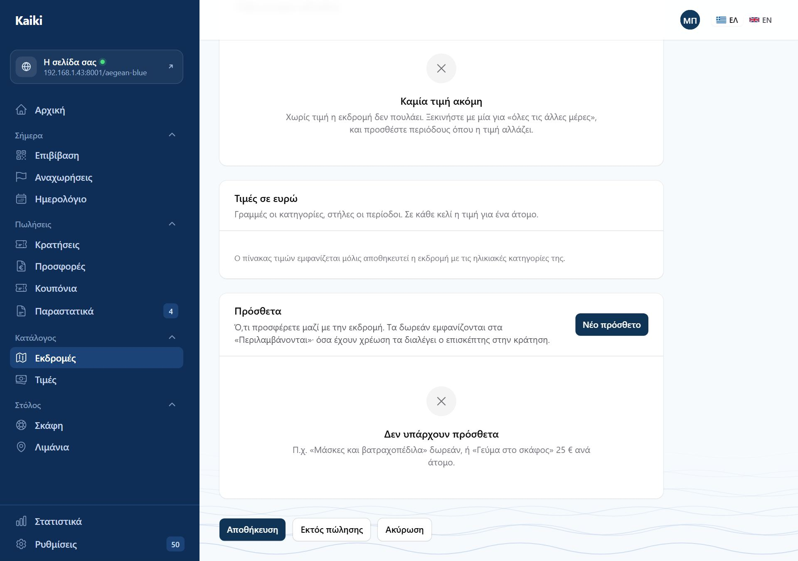
Δεν υπάρχουν ομάδες επιβατών ούτε πίνακας. Η τιμή του σκάφους μπαίνει σε τιμοκαταλόγους, ένας ανά περίοδο, από το «Νέος τιμοκατάλογος» στην ίδια καρτέλα.
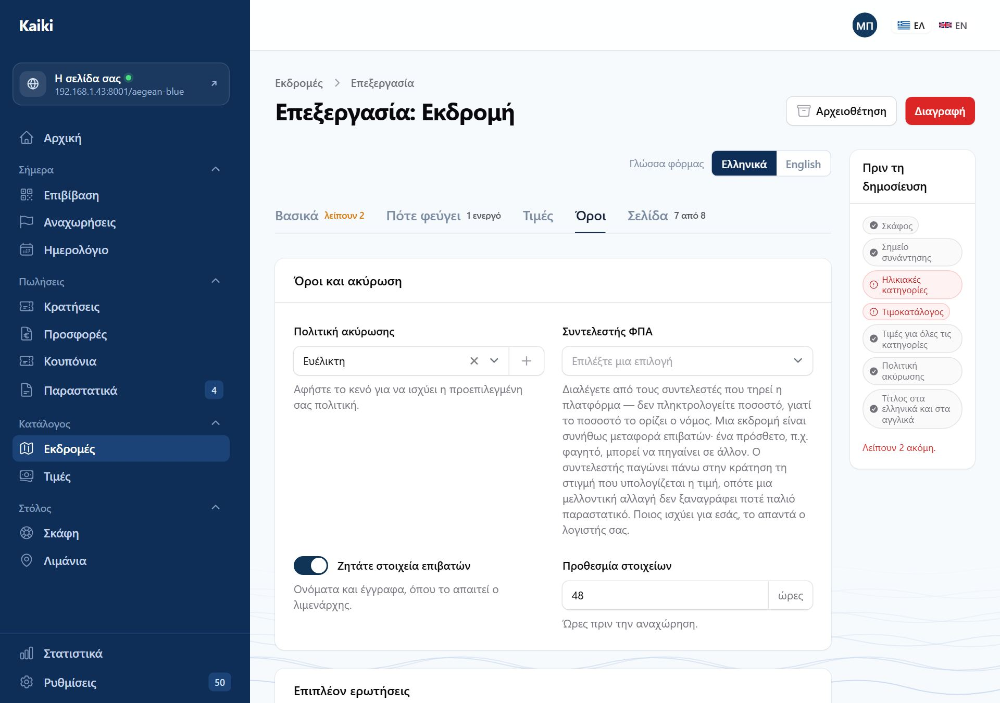
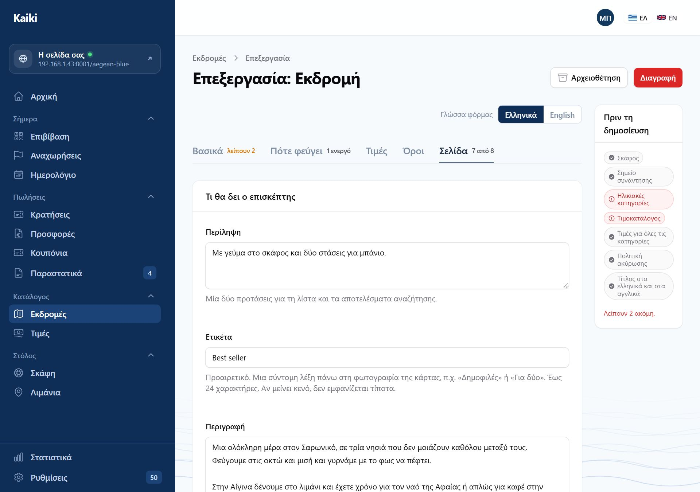
Όλα εδώ είναι προαιρετικά, και ό,τι μείνει κενό απλώς δεν εμφανίζεται — δεν αφήνει άδειο κουτί στη σελίδα.
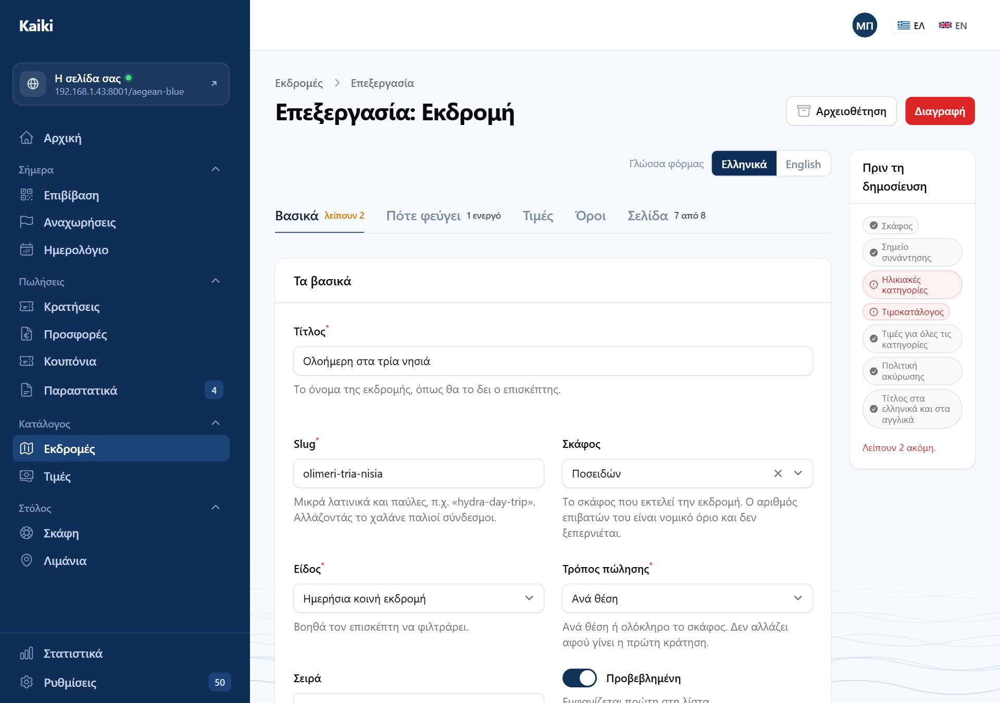
| Τι ζητάει | Πού το φτιάχνετε |
|---|---|
| Σκάφος | Πότε φεύγει, ενότητα «Σκάφος» |
| Σημείο συνάντησης | Πότε φεύγει |
| Ηλικιακές κατηγορίες | Τιμές, «Ομάδες επιβατών» |
| Τιμοκατάλογος | Τιμές — σώζεται με το πρώτο «Αποθήκευση τιμών» |
| Τιμές για όλες τις κατηγορίες | Τιμές — τα κόκκινα κελιά του πίνακα |
| Πολιτική ακύρωσης | Όροι |
| Τίτλος στα ελληνικά και στα αγγλικά | Βασικά, με τον διακόπτη γλώσσας |
Το ίδιο φαίνεται και πάνω στις καρτέλες: κάθε κόκκινο της λίστας μετράει στο «λείπει» της καρτέλας όπου διορθώνεται.
Όσο μένει κόκκινο, το κουμπί «Δημοσίευση» αρνείται και σας λέει τι λείπει — και κρατάει ό,τι γράψατε. Όταν όλα γίνουν πράσινα, η δημοσίευση βάζει την εκδρομή σε πώληση: εμφανίζεται στον κατάλογό σας και δέχεται κρατήσεις. Αν ξεκινήσατε την εκδρομή από τη λίστα «Τα πρώτα σας βήματα» της αρχικής, μετά τη δημοσίευση γυρίζετε εκεί, στο επόμενο βήμα.
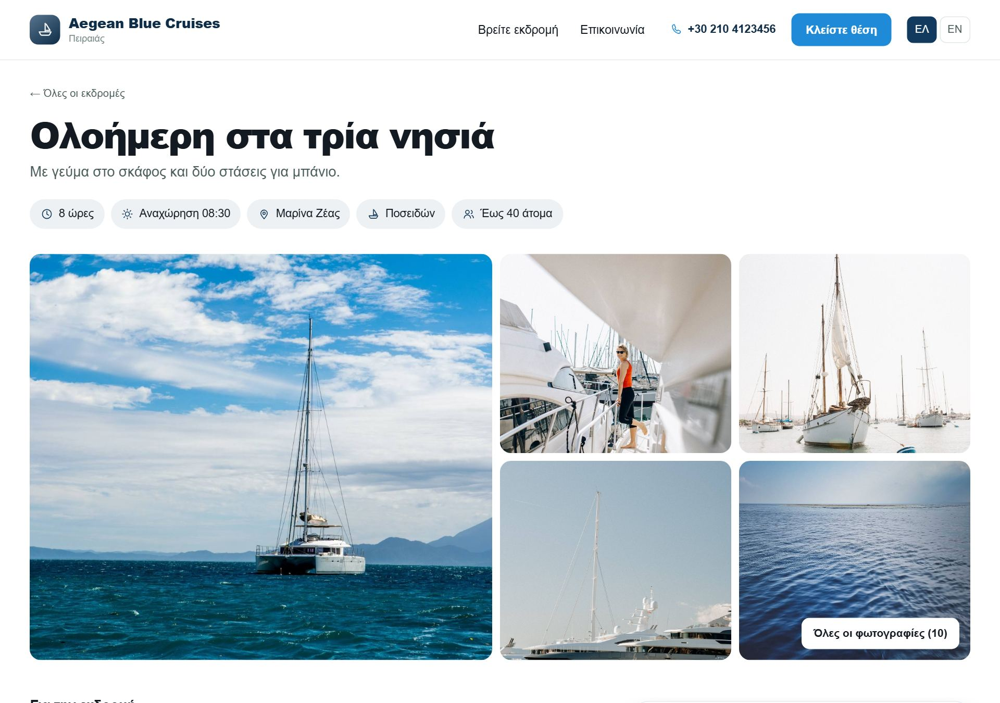
Τα περισσότερα αλλάζουν ελεύθερα: τίτλος, περιγραφή, πρόγραμμα, φωτογραφίες, πρόσθετα, ερωτήσεις. Τέσσερα θέλουν προσοχή, και ένα δεν πρέπει να αλλάξει καθόλου.
| Αλλαγή | Τι γίνεται πραγματικά |
|---|---|
| Τιμή | Ισχύει από τη στιγμή που την αποθηκεύετε και μετά. Οι κρατήσεις που έχουν ήδη γίνει κρατούν τη δική τους τιμή παγωμένη — δεν ξαναϋπολογίζονται ποτέ. |
| Ομάδα επιβατών που σβήνετε | Φεύγει μαζί με τις τιμές της. Οι κρατήσεις που την είχαν δεν χαλάνε: κρατούν δικό τους αντίγραφο της ομάδας. |
| Μέγιστα άτομα | Περνάει στις μελλοντικές αναχωρήσεις που δεν έχουν πουλήσει ούτε μία θέση. Όσες έχουν κρατήσεις κρατούν τη χωρητικότητα που είχαν όταν δημιουργήθηκαν και εμφανίζονται στον «Έλεγχο αναχωρήσεων» για να τις δείτε μία-μία — γιατί το να μειωθεί η χωρητικότητα μιας αναχώρησης που έχει πουλήσει είναι ο τρόπος να χάσει τη θέση του κάποιος που πλήρωσε. |
| Slug | Χαλάει κάθε παλιό σύνδεσμο: email που έχετε στείλει, αναρτήσεις, το Google. Αλλάξτε το μόνο σε εκδρομή που δεν έχει κυκλοφορήσει. |
| Τρόπος πώλησης | Μην τον αγγίξετε μετά την πρώτη κράτηση. Φτιάξτε καινούργια εκδρομή. |
Κάθε κράτηση κρατάει το δικό της αντίγραφο από την τιμή, τις ομάδες επιβατών και την πολιτική ακύρωσης, όπως ήταν τη μέρα που έγινε. Είναι επίτηδες: ο πελάτης πλήρωσε ό,τι είδε, και ένα παραστατικό δεν ξαναγράφεται επειδή αλλάξατε τιμή τον Οκτώβριο.
| Κουμπί | Τι κάνει | Πότε |
|---|---|---|
| Εκτός πώλησης | Σταματάει τις νέες κρατήσεις και η σελίδα της παύει να φορτώνει. Οι κρατήσεις που υπάρχουν δεν θίγονται. Επιστρέφει με το «Ξανά σε πώληση». | Προσωρινά: γέμισε η σεζόν, λείπει το σκάφος, θέλετε να τη δουλέψετε. |
| Αρχειοθέτηση | Φεύγει οριστικά από τις πωλήσεις και από τις λίστες. Οι κρατήσεις της μένουν όλες. Επαναφέρεται ως πρόχειρη. | Μια εκδρομή που δεν θα ξανακάνετε. |
| Διαγραφή | Κρύβει την εγγραφή. Η εκδρομή μπορεί να επανέλθει, αλλά η σελίδα της και οι σύνδεσμοί της σταματούν αμέσως. | Για κάτι που φτιάχτηκε κατά λάθος. |
| Οριστική διαγραφή | Μόνο σε διαγραμμένη εκδρομή, και μόνο από τον ιδιοκτήτη. Φεύγει για πάντα, μαζί με τις τιμές, τα δρομολόγια και τις αναχωρήσεις της· δεν αναιρείται. | Για εκδρομή που δεν είχε ποτέ καμία κράτηση. Αν είχε έστω μία, ακόμη και ακυρωμένη ή δοκιμαστική, αρνείται και λέει γιατί: η κράτηση χρειάζεται την εκδρομή της για το παραστατικό και την επιστροφή χρημάτων. |
Για εκδρομή με ιστορικό, η αρχειοθέτηση είναι η σωστή κίνηση — κρατάει τα βιβλία σας ολόκληρα.
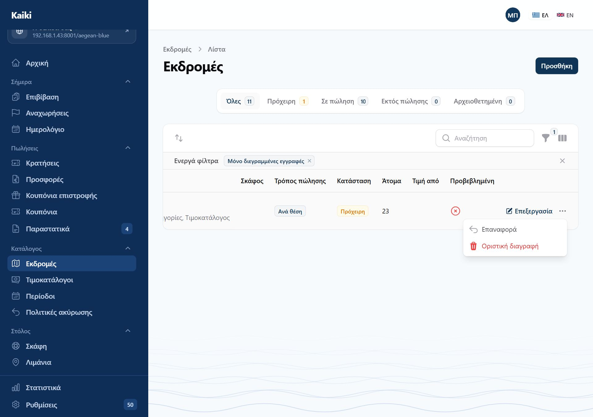
| Ερώτηση | Απάντηση |
|---|---|
| Πού διαλέγω σκάφος; | Στο «Πότε φεύγει», ενότητα «Σκάφος» («Συνήθες σκάφος»). Με ένα σκάφος είναι ήδη διαλεγμένο. |
| Γιατί ο πίνακας τιμών δεν εμφανίζεται; | Η εκδρομή δεν έχει ομάδες επιβατών. Προσθέστε μία στις «Ομάδες επιβατών» και αποθηκεύστε. |
| Γιατί δεν εμφανίζεται το κουμπί «Δημοσίευση»; | Η εκδρομή είναι ήδη σε πώληση. Αν είναι πρόχειρη και το κουμπί αρνείται, δείτε τα κόκκινα της λίστας. |
| Έβαλα δρομολόγιο και δεν βλέπω αναχωρήσεις. | Δείτε ότι το δρομολόγιο είναι ενεργό, ότι η περίοδός του περιλαμβάνει τις μέρες που κοιτάτε, και ότι η εκδρομή έχει σκάφος. |
| Πώς βάζω διαφορετική τιμή τον Αύγουστο; | Στις «Τιμές», τσεκάρετε την περίοδο — ή «+ Νέα περίοδος» αν δεν υπάρχει. Γίνεται στήλη στον πίνακα· γράφετε τις τιμές και «Αποθήκευση τιμών». |
| Πώς γράφω τα αγγλικά; | Με τον διακόπτη «Γλώσσα φόρμας» πάνω από τις καρτέλες. Ο αγγλικός τίτλος είναι υποχρεωτικός για δημοσίευση. |
| Πού είναι η προκαταβολή; | Στις «Τιμές», κάτω από τον πίνακα: «Προκαταβολή και προθεσμίες». Για μία μόνο περίοδο, το «⋯» στη στήλη της. |
| Πώς σβήνω μια εκδρομή για πάντα; | Πρώτα «Διαγραφή», μετά στις διαγραμμένες «Οριστική διαγραφή». Μόνο ο ιδιοκτήτης, και μόνο αν δεν είχε ποτέ κράτηση. |
Αυτός ο οδηγός καλύπτει μόνο την εκδρομή. Για τα σκάφη, τα λιμάνια, τις κρατήσεις και τα υπόλοιπα, δείτε το «Εγχειρίδιο του διοργανωτή».